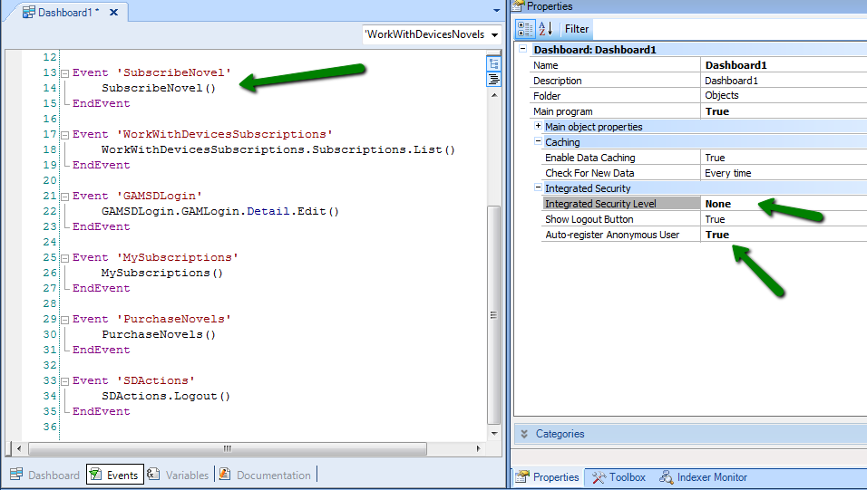
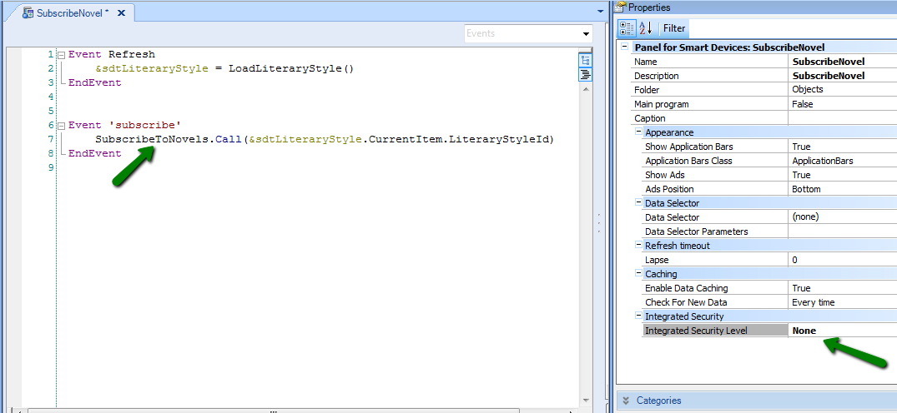
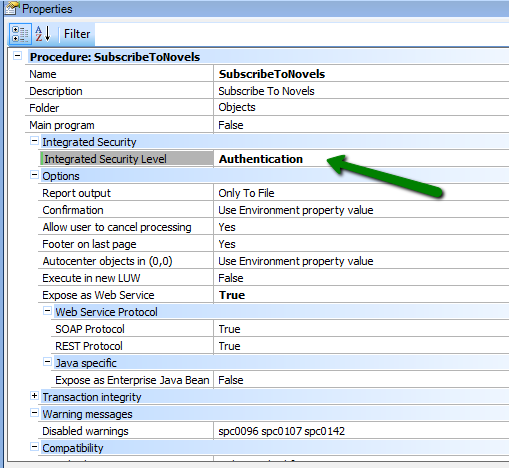

How is it possible to automatically register a user and keep it anonymous? In fact, what happens is that the application generated automatically creates a "user" of GeneXus Access Manager using the device identifier. The user created automatically has the following characteristics:
After having used the applications as an anonymous user, if the user decides to register in the application, GAM creates the new user (with the registration details) and assigns the same UserId that the auto-registered user had. For GeneXus 15 upgrade 10 or previous, this happens only with GAM Custom Authentication Type, GAM External Web Services Authentication Type and GAM Local Authentication Type. SInce GeneXus 15 Upgrade 11 it's valid for any GAM Authentication Type. This allows for any information related to the auto-registered user saved by our application to remain associated to the new user registered. How could the auto-registered anonymous user and the registered user be combined? In the context of the Auto-register anonymous user - SD usage example consider the following case: If the dashboard has Auto-Register Anonymous User Property = TRUE, and Integrated Security Level property = NONE, as shown in the figure:  This means that it is possible to access this dashboard without entering credentials, but the user cannot be auto-registered. Note that the dashboard has an Action Item that is a SD panel called "SubscribeNovel". Just like the dashboard calling it, it has the property Integrated Security Level = NONE:  This means that the behavior is the same as for the dashboard – this SD panel will be executed without request for login or auto-register.  Therefore, when trying to execute this service, because it requires authentication and is in the tree of calls of a dashboard object that accepts the registry of anonymous users, an auto-registration will occur through the mechanism described. Every smart device can be singularly identified by means of a DeviceId, which enables the GAM to automatically create a "user" for the device in a transparent manner. Such user will be identified by the device Id. This user is considered by the application as a registered user. Specifically, any data that the logic of the application associates to a user will be then associated to that user’s identifier that has been automatically created. This user’s session never expires (meaning that the Oauth token expire (minutes) does not apply to the case of anonymous users’ sessions). Note: Until GeneXus 15 upgrade 10, the registration has to be done using the GAM Local Authentication Type to relate the registered user to the anonymous user. |
| Backlinks | |
| Auto-Register Anonymous Users | Toc:Native Mobile Applications Development |